Publications
Journal articles, conference papers and book chapters
A complete and up-to-date list is also available on ORCID and Google Scholar.
Journals
Micro aerial vehicles (MAVs), and quadrotors in particular, have become essential platforms for research and applications requiring agile and reliable flight. However, developing accurate models and well-tuned controllers for quadrotors is a significant challenge. This task is further complicated by mechanical coupling to external structures, such as gimbal testbeds, which introduce dynamic interactions that can degrade control performance. To address this challenge this paper proposes a relay-based approach for the identification of linear models and the autotuning of PID controllers for a quadrotor attitude and rate dynamics, using a Crazyflie 2.1 MAV mounted on a gimbal structure. These models are used to fine-tune the PID through the SIMC and AMIGO tuning PID rules. An event-based control strategy with an adaptive threshold is also implemented to optimize computational efficiency while maintaining control performance achieving a 30.56% reduction in CPU load compared to periodic execution. Experimental results demonstrate that the method significantly improves performance compared to the default controller, which fails under the additional inertia introduced by the gimbal. The study highlights the potential of relay-based autotuning for MAVs and establishes a foundation for future benchmarks and free-flight validation.
Networked control systems are critical in industrial applications but remain vulnerable to controller failures, which can destabilize operations. Blockchain technology offers a decentralized solution to enhance reliability. While blockchain technologies have been mainly used in financial systems (such as cryptocurrencies) so far, they are now being used in an increasing number of applications (such as logistics, power grids, or the Internet of Things) due to their powerful features and advantages. In this article, the use of blockchains is proposed and explored to deploy decentralized and reliable controllers. A blockchain-based controller architecture is presented to provide controllers that are permanently available, open accessible, and open source. Time to transaction finality and cost for transactions are analyzed in different blockchain networks, thus identifying their suitability. Our analysis reveals that blockchain networks can potentially be applied in slow processes with big enough time constants. Moreover, we propose the integration of event-based control to reduce transaction costs, thereby enhancing the viability of blockchain technologies in networked control systems. To demonstrate the practical application and cost efficiency of our approach, we present a case study focusing on a greenhouse climate control system. Results show that feasible blockchain networks – those compatible with sampling period constraints – consistently reduce control costs. For instance, on Fantom blockchain, event-based control achieved a 27.73-fold reduction in average control costs across six system variables over the eight-day operation period.
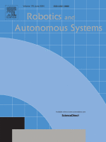
This paper proposes a method for the deployment of a multi-agent system of unmanned aerial vehicles (UAVs) as a shield with potential applications in the protection of infrastructures. The shield shape is modeled as a quadric surface in the 3D space. To design the desired formation (target distances between agents and interconnections), an algorithm is proposed where the input parameters are just the parametrization of the quadric and the number of agents of the system. This algorithm guarantees that the agents are almost uniformly distributed over the virtual surface and that the topology is a Delaunay triangulation. Moreover, a new method is proposed to check if the resulting triangulation meets that condition and is executed locally. Because this topology ensures that the formation is rigid, a distributed control law based on the gradient of a potential function is proposed to acquire the desired shield shape and proofs of stability are provided. Finally, simulation and experimental results illustrate the effectiveness of the proposed approach.
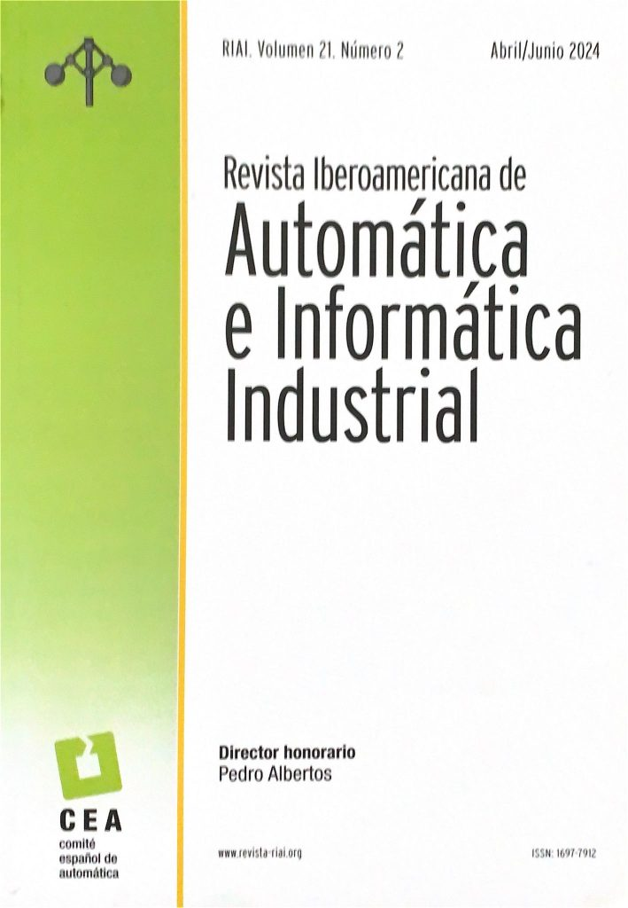
This work presents an analysis of the effect of sampling and communication frequency in a multi-robot system (MRS) on its temporal performance and computational load. The experimental system is composed of Khepera IV mobile robots and Crazyflie 2.1 aerial robots. The analysis is carried out on the movement of the MRS from a set of initial conditions to a desired formation, defined by a set of desired relative distances between agents. Three scenarios are evaluated regarding the control-level architecture: centralized, distributed in ROS 2, and distributed on board the robot. The minimum operating frequency for periodic sampling is determined, and an event-based sampling protocol is presented as a proposal to reduce message transmissions. For this case, an optimal constant threshold is determined, with a temporal performance equivalent to the optimal periodic sampling, but with an 80% reduction in sampling.
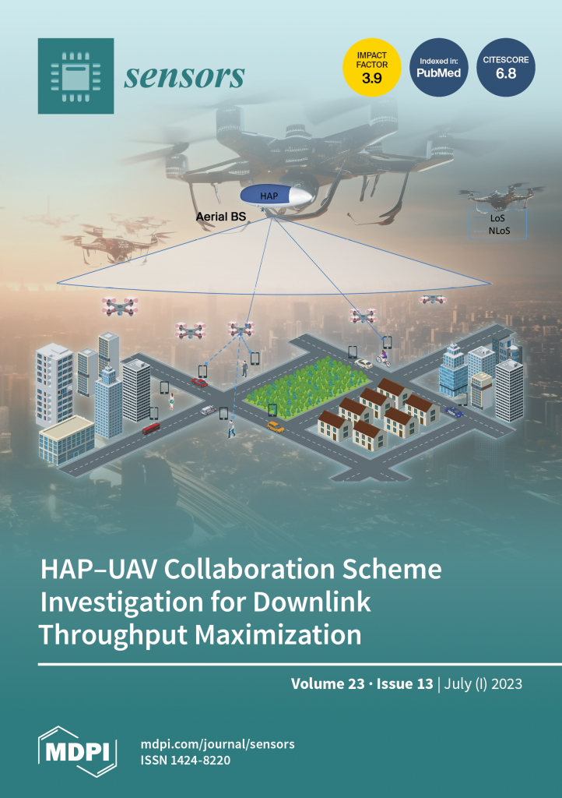
Nowadays, cyber-physical systems (CPSs) are composed of more and more agents and the demand for designers to develop ever larger multi-agent systems is a fact. When the number of agents increases, several challenges related to control or communication problems arise due to the lack of scalability of existing solutions. It is important to develop tools that allow control strategies evaluation of large-scale systems. In this paper, it is considered that a CPS is a heterogeneous robot multi-agent system that cooperatively performs a formation task through a wireless network. The goal of this research is to evaluate the system's performance when the number of agents increases. To this end, two different frameworks developed with the open-source tools Gazebo and Webots are used. These frameworks enable combining both real and virtual agents in a realistic scenario allowing scalability experiences. They also reduce the costs required when a significant number of robots operate in a real environment, as experiences can be conducted with a few real robots and a higher number of virtual robots by mimicking the real ones. Currently, the frameworks include several types of robots, such as the aerial robot Crazyflie 2.1 and differential mobile robots Khepera IV used in this work. To illustrate the usage and performance of the frameworks, an event-based control strategy for rigid formations varying the number of agents is analyzed. The agents should achieve a formation defined by a set of desired Euclidean distances to their neighbors. To compare the scalability of the system in the two different tools, the following metrics have been used: formation error, CPU usage percentage, and the ratio between the real time and the simulation time. The results show the feasibility of using Robot Operating System (ROS) 2 in distributed architectures for multi-agent systems in experiences with real and virtual robots regardless of the number of agents and their nature. However, the two tools under study present different behaviors when the number of virtual agents grows in some of the parameters, and such discrepancies are analyzed.
Development of applications related to closed-loop control requires either testing on the field or on a realistic simulator, with the latter being more convenient. To ease that need, this work introduces MVSim, a simulator for multiple vehicles or robots capable of running in real time dozens of agents in simple scenarios, or a handful of them in complex scenarios. MVSim employs realistic physics-grounded friction models for tire–ground interaction, and aims at accurate and GPU-accelerated simulation of most common modern sensors employed in mobile robotics and autonomous vehicle research, such as depth and RGB cameras, or 2D and 3D LiDAR scanners. All depth-related sensors are able to accurately measure distances to 3D models provided by the user to define custom world elements. Efficient simulation is achieved by means of focusing on ground vehicles, which allows the use of a simplified 2D physics engine for body collisions while solving wheel–ground interaction forces separately. The core parts of the system are written in C++ for maximum efficiency, while Python, ROS 1, and ROS 2 wrappers are also offered. A custom publish/subscribe protocol based on ZeroMQ (ZMQ) is defined to allow for multiprocess applications to access or modify a running simulation. This simulator enables and makes easier to do research and development on vehicular dynamics, autonomous navigation algorithms, and simultaneous localization and mapping (SLAM) methods. An experimental performance benchmarking is provided against other state-of-the-art simulators showing significant less CPU usage. The project source code is freely available online under the BSD 3-clause license in https://github.com/MRPT/mvsim.
Multi-agent system research is a hot topic in different application domains. In robotics, multi-agent robot systems (MRS) can realize complex tasks even if the behavior of each agent seems simple thanks to the cooperation between them. Although many control algorithms for MRS are proposed, few experimental results are validated on real data, being essential to building new testbeds to conduct MRS research and teaching. Moreover, most existing platforms for experimentation do not offer an overall solution allowing software and hardware design tools. This paper describes the design and operation of Robotic Park, a new indoor experimental platform for research in MRS. The heterogeneity and flexibility of its configuration are two of its main contributions. It supports control design and validation of MRS algorithms. Experiences can be carried out in a virtual environment, physical environment, or under a hybrid scheme, as digital twins have been developed in Gazebo and Webots. Currently, two types of aerial vehicles (Crazyflie 2.X and DJI Tello) and two types of differential mobile robots (Turtlebot3 and Khepera IV) are available. Both internal and external positioning systems using different technologies such as Motion Capture or Ultra-WideBand are also available for experiences. All components are connected through ROS2 (Robot Operating System 2) which enables experiences under a centralized, distributed, or hybrid scheme, and different communication strategies can be implemented. All these features are novelties with respect to other existing platforms. A mixed reality experience that addresses the problem of formation control using event-based control illustrates the platform usage.
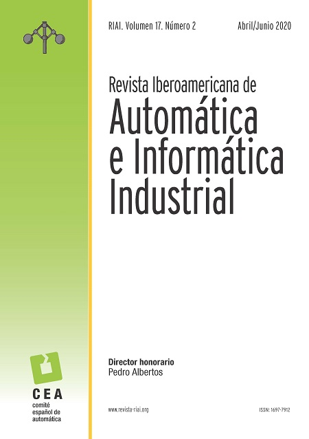
This work presents the complete modeling and control of the Drive-by-Wire system of an urban electric vehicle. This system comprises the steering mechanism, acceleration and braking of the vehicle. Modeling was carried out using low-order transfer functions based on “black-box” models. Regarding control, all developed controllers are of the PID type in their different configurations. The DC actuators coupled to the steering and brake are controlled by a cascade control system, while acceleration is controlled by a gain-scheduling system. The project code is available on the GitHub platform. Experimental results demonstrate the validity of the models obtained, as well as the effectiveness of the developed controllers.
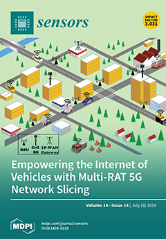
Keeping a vehicle well-localized within a prebuilt-map is at the core of any autonomous vehicle navigation system. In this work, we show that both standard SIR sampling and rejection-based optimal sampling are suitable for efficient (10 to 20 ms) real-time pose tracking without feature detection that is using raw point clouds from a 3D LiDAR. Motivated by the large amount of information captured by these sensors, we perform a systematic statistical analysis of how many points are actually required to reach an optimal ratio between efficiency and positioning accuracy. Furthermore, initialization from adverse conditions, e.g., poor GPS signal in urban canyons, we also identify the optimal particle filter settings required to ensure convergence. Our findings include that a decimation factor between 100 and 200 on incoming point clouds provides a large savings in computational cost with a negligible loss in localization accuracy for a VLP-16 scanner. Furthermore, an initial density of ∼2 particles/m2 is required to achieve 100% convergence success for large-scale (∼100,000 m2), outdoor global localization without any additional hint from GPS or magnetic field sensors. All implementations have been released as open-source software.
International conferences
This work presents a distributed control strategy for three-dimensional rigid formations in multi-agent systems (MAS) based on the incorporation of Lagrange multipliers into the control law. The approach ensures convergence towards predefined formations on differentiable surfaces, maintaining the scalability of the system. Two different implementations are analyzed, and the results show that, under mild assumptions, the proposed controllers are locally exponentially stable. Experimental validation is carried out in a virtual environment with drones as agents. The results show a significant reduction in overshoot and control signal magnitude compared to existing approaches, while maintaining comparable settling times and consistent behavior in configurations of up to twenty agents.
This paper proposes a method to recover from the failure or loss of a subset of agents in a distance-based formation problem, where the system is initially deployed forming a virtual shield embedded in the 3D space. First, a distributed algorithm is proposed to restore the topology, which is a Delaunay triangulation. After that, the nodes execute a distance-based distributed control law that considers adaptive target distances. These values are computed in parallel by the nodes, which try to reach an agreement with some constraints, given by the desired shield shape. The updating policy is based on events. The results are illustrated through simulation examples.
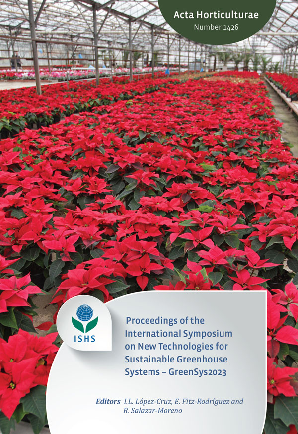
Agriculture is key to sustaining the population growth of society, as it plays a key role in animal and human nutrition. Another key factor is also the sustainability of processes, which is why it is important for agriculture to be sustainable. In the pursuit of this sustainability, automation and in particular robotization can be tools for problem optimal solving. On the other hand, precision agriculture in greenhouses makes it possible to optimize quantity and quality production while maximizing profit. There are many tasks that are carried out in a greenhouse, but not all of them are feasible using robots. One of the most common tasks is transport. This paper explains one of the results of the Agricultural Collaborative Robots inside IoT (AGRICOBIOT) project. In particular the AGRICOBIOT I robot, which is part of a fleet of multi-functional robots destined, among other tasks, to transport harvested fruit, tools, etc., inside the greenhouse. The robot has been designed based on a generic commercial differential mobile platform, which has been adapted to carry out this task collaborating with the human. The work describes the details of this robot and validates its operation in Gazebo using a 3D model of a greenhouse located in Almeria (southern Spain). Specifically, a solution is proposed to the problem of navigating the entire greenhouse, considering for the presence of unexpected or dynamic objects and people in the corridors by means of a global and local planner from those available in the Nav2 framework.
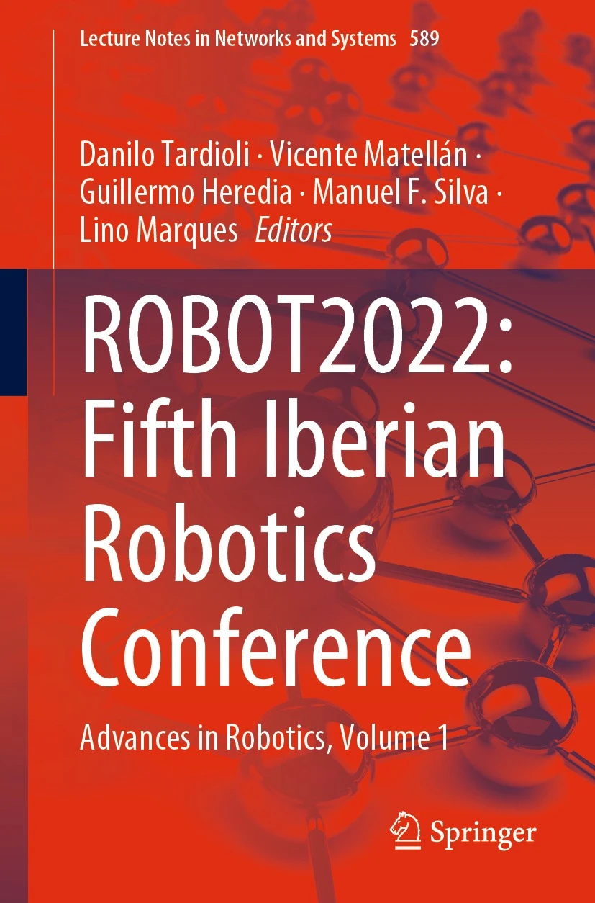
In this work, a novel algorithm for sensors calibration in quadrotor is presented. Classical procedures are used to calibrate some variables but for the others, the angular speeds, an indirect method has been proposed. The algorithm has been applied to the quadrotor Crazyflie 2.X in a practical way. The proposed method has been described in detail and it can be applied in other kind of quadrotors in a simple way. Some experiments in a real environment have been performed to validate the solution. This work is part of a framework for quadrotor control engineering that improves the global performance of the system.
This paper presents the development of a vision based navigation control platform for conducting laboratory experiments with the micro aerial vehicle Crazyfie 2.1. A Vicon motion capture system is used to localize the nano-dron. ROS2 is used as communication layer between the crazyfies, the position control nodes and the Vicon system. The platform can be used for both research and education purposes as it is ready to design and perform experiments with the nano-drone. The architecture has been designed to optimize the available resources by means of a remote controller and event-triggered communications. The efciency of this approach is illustrated through the experimental results of an use case.
This article describes the experience of the Automatic Control, Robotics and Mecha-tronics Research Group from the University of Almería in the participation and preparation of workshops for teaching programming, control engineering and robotics to young students. All the activities designed to encourage the study of STEM careers among young students are described. Some activities are focused on directly promoting Automatics and Robotics disciplines. Others deal with encouraging the participation of women in science, and so, breaking gender inequality. Two main workshops, where first- and second-year students collaborate directly with the University of Almería, are also described in detail. Finally, this paper shows the growth in the number of students who enrolled in engineering degrees thanks to these dissemination activities.
National conferences
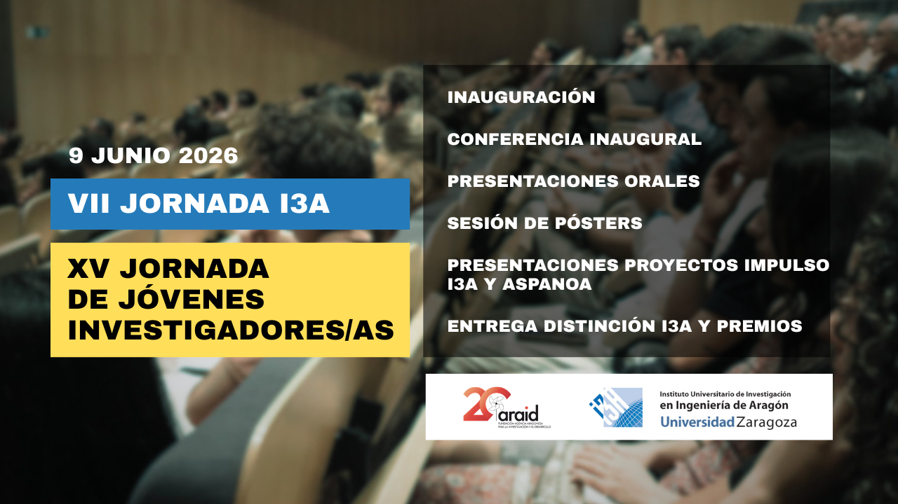
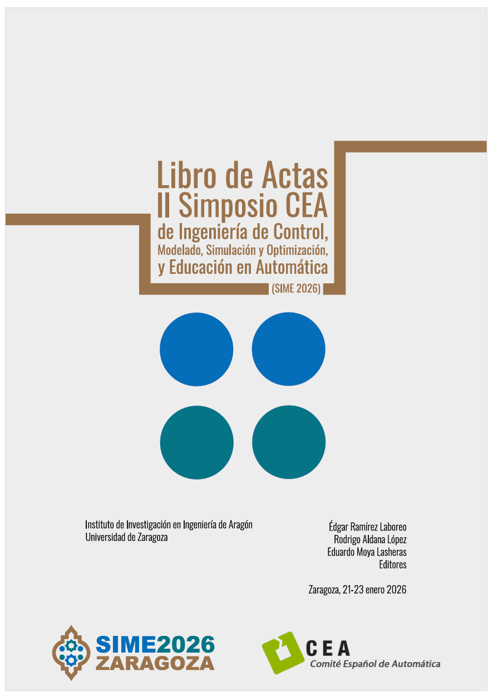
This work presents an online identification and autotuning strategy based on symmetric relay feedback with hysteresis for estimating the dynamic velocity model of mobile robots. This method enables accurate estimation of the system model under load changes, reducing both the disturbance to the system and the need for prior knowledge of its dynamics. The implementation was carried out on the Khepera IV robot, validated experimentally in three different cases: suspended, in its nominal configuration, and with an additional load. The results show that, in less than 0.3 seconds, it is possible to obtain parameters for accurate first- and second-order-with-delay dynamic models. SIMC (Simple Internal Model Control) tuning rules are applied to these models to automatically adjust the PID controllers. The closed-loop results demonstrate a significant improvement in controller response, with a stable time constant despite load variations.
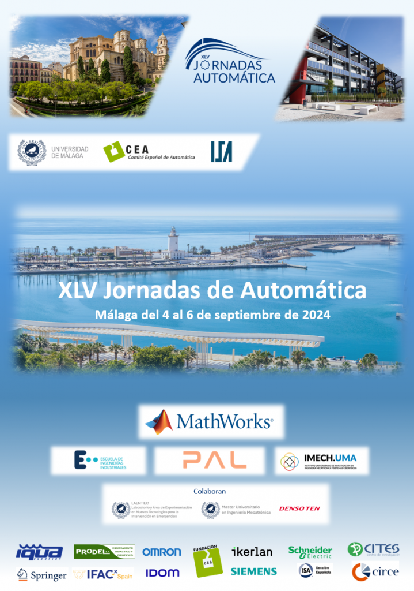
Research in Multi-Agent Robotic Systems (MARS) has received great attention in recent years, since cooperation between agents allows the system to perform complex tasks from relatively simple individual behaviors. One of the main challenges in this field is achieving and maintaining the formation of the multi-agent system, i.e., coordinating multiple agents to satisfy the constraints imposed on their states. This work aims to address this challenge within the framework of Robotic Park, an experimental platform integrated into a ROS2 network, which supports MARS experiences in a virtual environment, a physical environment, or a hybrid scheme, using aerial and ground vehicles. The proposed benchmark enables both the generation of a target formation and the design of the control algorithms to achieve it. It also enables the evaluation of system performance from different aspects, such as local controller performance, the number of communication messages, or CPU usage.
Intensive greenhouse agriculture has become one of the pillars of society's demographic growth. However, as the years go by, the increasing overpopulation of both humans and the animal world poses a problem for humanity, so existing agriculture must become more efficient and sustainable. In this pursuit, automation and, in particular, robots play a fundamental role as tools for the optimal solution of some key problems in this field related to the development of tedious, dirty and/or dangerous tasks, the typical DDD (Dull, Dirty, Dangerous) tasks. This work focuses on one of the results of the Agricultural Collaborative Robots inside IoT II (AGRICOBIOT II) project, specifically an Ackermann mobile robot intended to perform transport tasks inside Mediterranean-type greenhouses, designed and built at the University of Almería itself to work collaboratively with the farmer. This work describes the details of this robot, validating its operation in the MVSim simulator based on a 3D model of it. In particular, the work focuses on the navigation problem during transport, taking into account the presence of people and unexpected or dynamic objects through the Nav2 autonomous navigation framework.
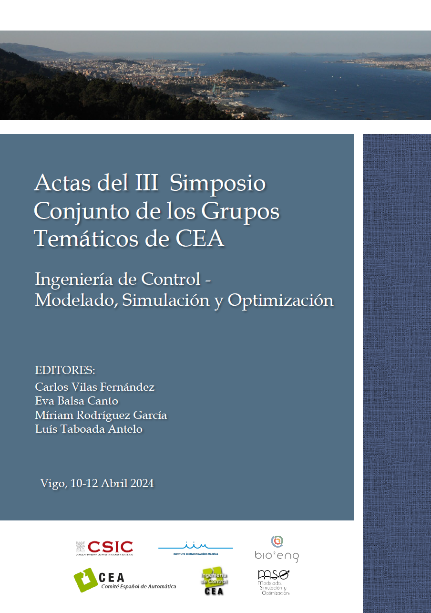
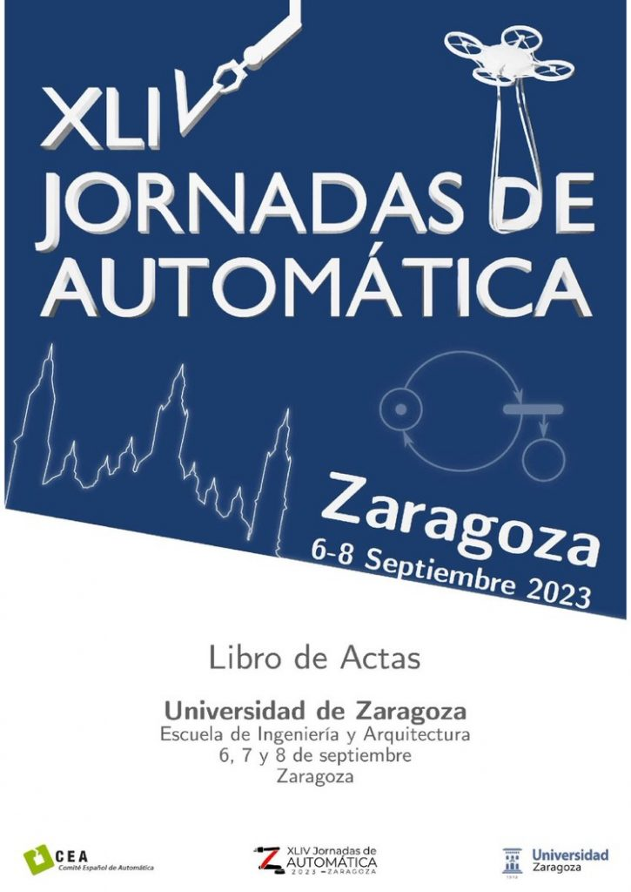
Cyber-Physical Systems (CPSs) play an increasingly present role today, given the synergy that must exist between the physical and digital worlds in this “connected” society. Multi-Robot Systems (MRSs) make up an important part of these systems, and can provide more efficient solutions to many of today's automation challenges compared to the equivalent solution provided by a single robot. This work examines the design of the inter-agent communication protocol of an MRS for a consensus-based formation problem with aerial robots. The minimum operating frequency at which periodic communication between connected agents must run is determined to be 10 Hz. Finally, the triggering threshold required for an event-based communication protocol is analyzed in order to achieve more efficient management of the communication channel without degrading the performance of the periodic reference system, 2 cm.
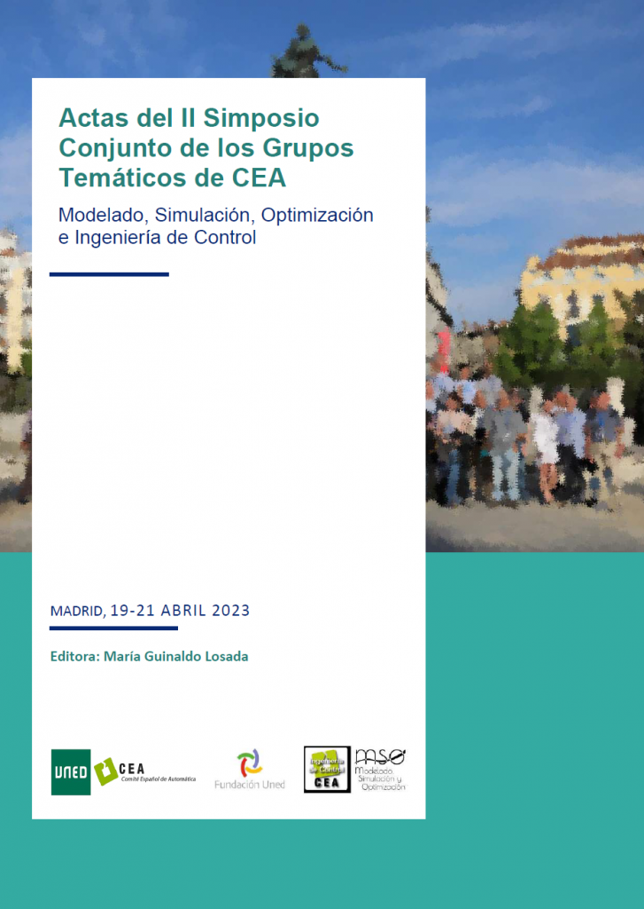
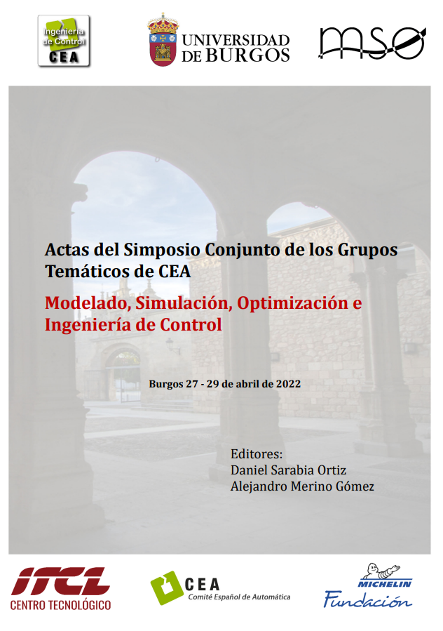
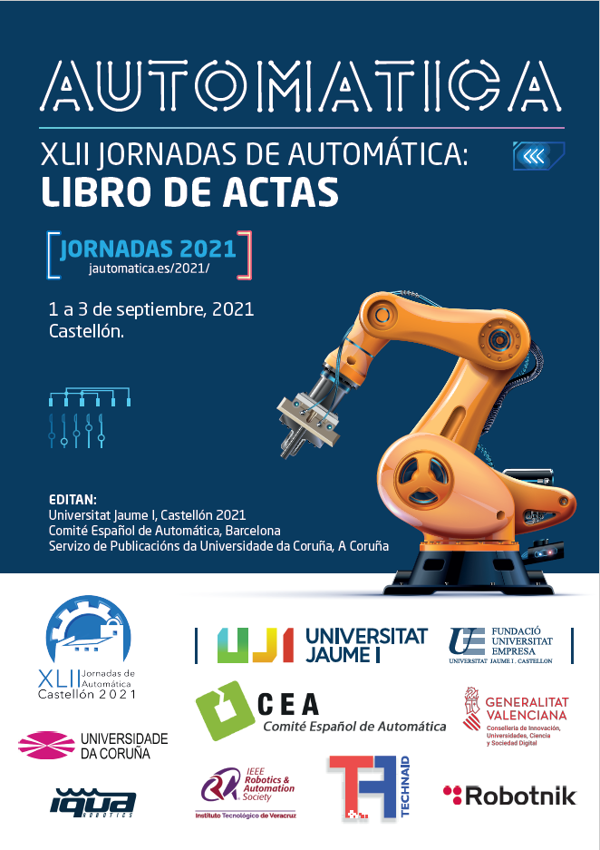
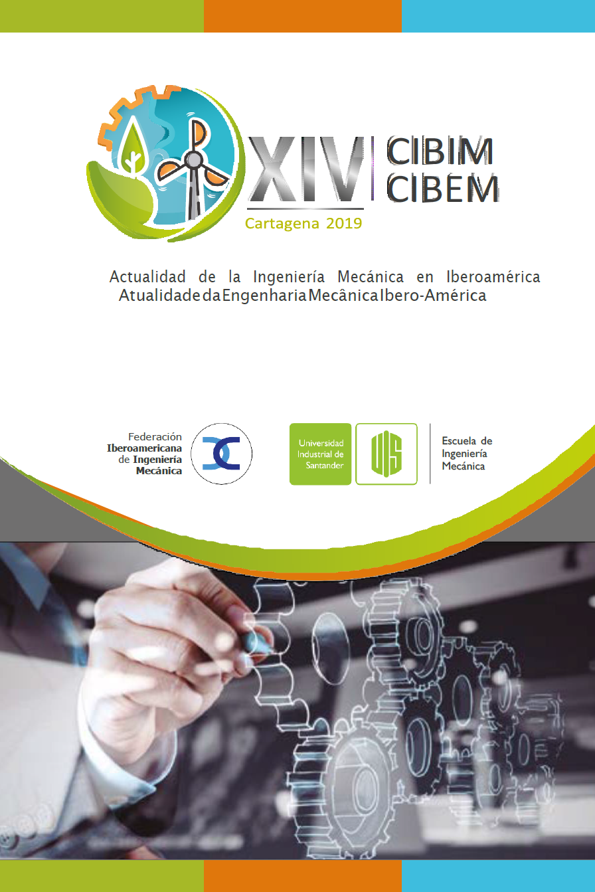
This work develops a low-level control system for the Steer-by-Wire system of an autonomous electric vehicle prototype. First, the dynamics of the DC motor responsible for actuating the steering rack are obtained. Having obtained a dominant-delay first-order model for the motor's rotational speed behavior, a cascade control system is proposed for position control. Possible errors due to control-signal saturation are avoided by implementing an anti-windup strategy on both controllers. To facilitate model validation and testing of the control system to be installed, simulation work was carried out with the Simulink® tool. The experimental vehicle is equipped with an industrial PC, and the applications run under Ubuntu and ROS. The implementation was carried out through a ROS node that supports the control algorithm and communicates with the hardware architecture. In view of the results obtained, the control architecture has proven to be robust.
Book chapters
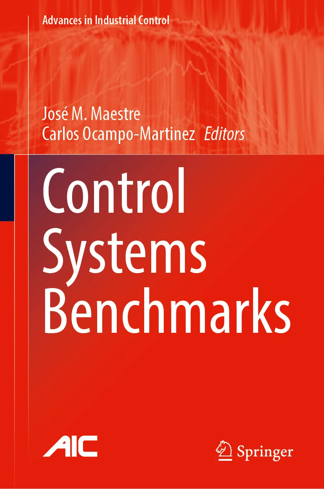
Research in cooperative multi-agent robotic systems (MARS) has received wide attention in recent years since this cooperation allows the system to perform complex tasks from relatively simple individual behaviors. One key problem to solve from the control engineer's point of view in this setup is the achievement and maintenance of the formation of the multi-agent system, i.e., to drive multiple agents to achieve prescribed constraints on their states. In this regard, Robotic Park is an experimental platform that supports MARS experiences with different types of vehicles (aerial and ground robots). The architecture of Robotic Park allows working in a virtual environment, in a physical environment, or in a hybrid scheme. All the elements of the system are integrated into a ROS 2 network. Different aspects such as the performance of the local controllers, the number of communication messages, or the CPU usage are evaluated in the proposed benchmark.